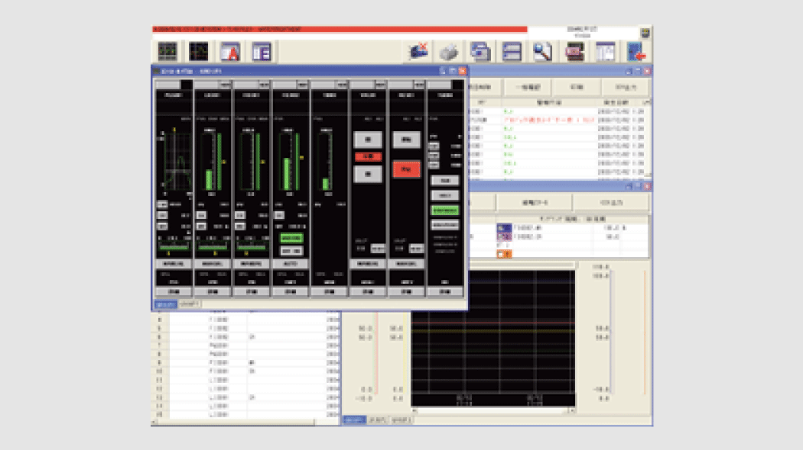
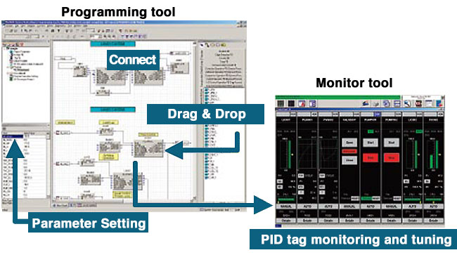

PLC engineering software (MELSEC) MELSOFT PX Developer


Terdiri dari alat pemrograman dan alat pemantauan yang mendukung pengguna untuk memproses DDC pada QnP(R)HCPU. Pekerjaan pemrograman dilakukan dalam bahasa FBD (standar IEC 61131-3). Pemantauan pemrosesan DDC dilakukan dengan data tag.

FB (blok fungsi) dan fungsi penting untuk kontrol loop
- Selain FB instruksi kontrol loop CPU proses, PX Developer telah menggabungkan FB yang mudah digunakan.
- FB/fungsi dasar (operasi logika, operasi aritmatika, dll.) yang mematuhi IEC61131-3 juga disediakan, yang memungkinkan kontrol sekuens sederhana dijelaskan dalam FBD.
Program yang mudah distandarkan dan digunakan kembali
- PX Developer mematuhi standar IEC61131-3. Program dapat dimodularisasi (FB khusus dapat dibuat). Hal ini memungkinkan penggunaan kembali dalam proyek mendatang yang memerlukan kemampuan serupa, sehingga sangat mengurangi waktu pengembangan.
Integrasi dengan program kontrol sekuens
- Pertukaran data yang mudah dengan program ladder.
- Data dapat dipertukarkan antara program FBD dan program ladder (dibuat dengan GX Developer) menggunakan nama logis (label) sebagai ganti alamat memori perangkat. Oleh karena itu, konstanta tag kontrol loop, nilai SV, dll. dapat dengan mudah diubah dari program ladder.
Fungsi penyetelan dan pemantauan yang komprehensif
- PX Developer memiliki berbagai layar (pelat muka, tren penyetelan, alarm, daftar kejadian, dll.) yang digunakan untuk menyetel, memantau, dan mengoperasikan loop kontrol yang dibuat. Penyetelan dan pemantauan tersedia segera setelah membuat program.
- Penyetelan otomatis dapat digunakan dengan metode Step Response atau metode Limit Cycle.
Peningkatan kemampuan operasional untuk sistem redundan
- Pengguna dapat merancang sistem redundan tanpa mengulang prosedur yang sama untuk sistem kontrol dan siaga, sehingga mengurangi total waktu penyiapan dan perancangan.